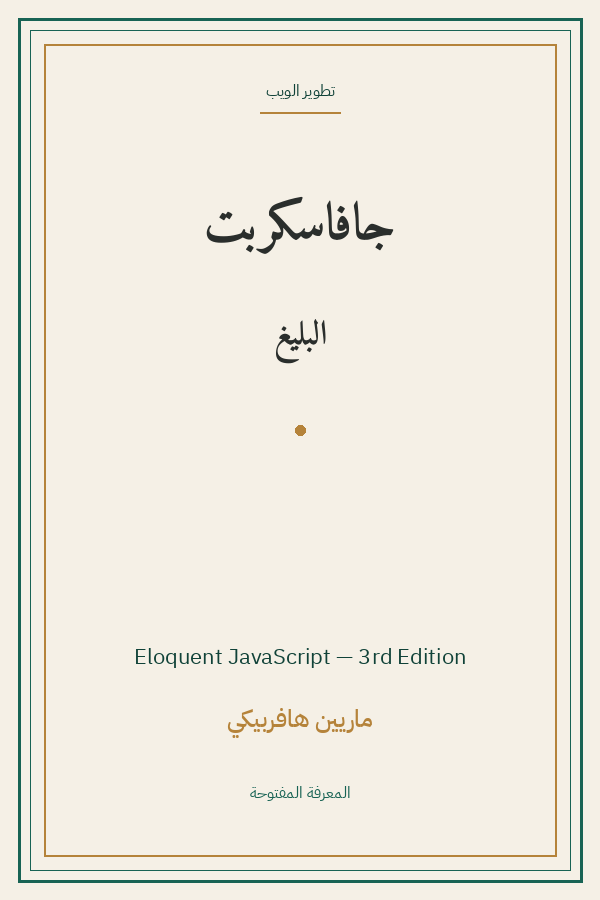

Eloquent JavaScript (3rd Edition)
جافاسكربت البليغ
البرمجة والتقنية
CC BY-NC
ترجمة كاملة
جافاسكربت البليغ في طبعته الثالثة: القيم والبنية والبرمجة الكائنية والوظائف العليا، ثم المتصفح وDOM والأحداث والرسم، وNode والمشاريع العملية الأربعة — مع كل التمارين والشيفرة.
| المؤلف | ماريين هافربيكي — Marijn Haverbeke |
| سنة النص الأصلي | ٢٠١٨ |
| كلمات المصدر (الإنجليزية) | ١٢٢١٥٩ |
| كلمات الترجمة (العربية) | ٩٨٣٨١ |
| مقاطع الترجمة المدققة | ٨٧ |
| مدة القراءة التقريبية | ≈ ٢٢٣٥ دقيقة |
الترخيص والحقوق: رخصة المشاع الإبداعي: النسبة-غير تجاري 3.0 (eloquentjavascript.net).